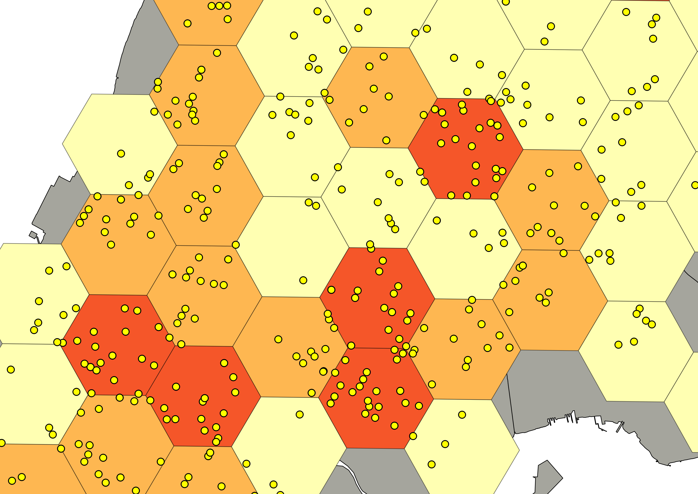

Crime Mapping and Spatial Analysis
Class 7: Spatial Analysis of Points
aggregation, buffers, distances, patterns, clustering
Introduction to Spatial Analysis
-
"everything is related to everything else, but near things are more related than distant things"
--Waldo Tobler's First Law of Geography
Moving from maps to statistics
- concepts
- tools
- data
- analysis
- presentation
Working with Points

Aggregation
Areal Unit Choice and MAUP
Aggregation
Areal Unit Choice and MAUP
Buffers
Buffers
- Where should they be focused?
- What radius to use?
Distances
- Between which points?
- How to calculate?
- Distance functions
Euclidean Distance
2 dimensions
$$d(p,q) = \sqrt{(q_1 - p_1)^2 + (q_2 - p_2)^2 }$$3 dimensions
$$d(p,q) = \sqrt{(q_1 - p_1)^2 + (q_2 - p_2)^2 + (q_3 - p_3)^2 }$$Geodesic Distance
- Great circle distance
- Haversine distance
- Vincenty Ellipsoid distance
Patterns
- Random vs. Systematic
- Pattern and Scale
- Segregation


Exposure
Kernel Density Estimation
$$ \hat{f}_h(x) = \frac{1}{n}\sum_{i=1}^n K_h(x - x_i) = \frac{1}{nh}\sum_{i=1}^n K\left(\frac{x - x_i}{h}\right)$$
K-Means Clustering
$$\textrm{arg min}\sum_{i=1}^k\sum_{x_j \in s_i}\left(x_j - \mu_i \right)^2$$How many clusters should you use?
K=2

K=10

K=20

K=5
What about time?